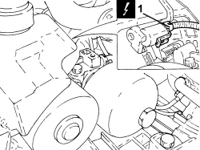
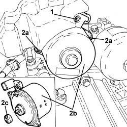
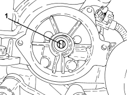
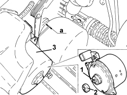
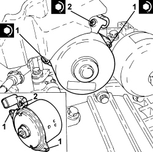

2127C30 HYDRAULIC SPEED SELECTION SYSTEM PUMP - R.R.
- Path
- Procedures > 21 GEARBOX UNIT > 2127 ELECTRO-HYDRAULIC SELECTION GEARBOX EXTERNAL CONTROLS > 2127C HYDRAULIC GEAR SELECTION SYSTEM > 2127C30 HYDRAULIC SPEED SELECTION SYSTEM PUMP - R.R.
- Kind
- repair procedure (removal / refitting; the operation number is the code)
- Applies to
- engines: 2.2 JTS; all production periods
- Interactive page
- https://sloeber94.github.io/elrnDB-aBrrSpdr/en/#/946004305
Applies to: engines: 2.2 JTS; all production periods
 Removing
Removing
 Refitting
Refitting- Place the gear lever in N.
Op. 5530B52 BATTERY SUPPORT/DRIP TRAY - R.R
1. Disconnect the electrical connection for the electric pump.
Description | Connector | |
|---|---|---|
1 | Robotized gearbox electric pump |

Applies to: engines: 2.2 JTS; all production periods
1. Undo the connector side electric pump fixing bolt.
2. Undo the two remaining bolts (2a) and remove the electric pump (2b) and coupling (2c).

Applies to: engines: 2.2 JTS; all production periods
Applies to: engines: 2.2 JTS; all production periods
Refitting
Removing1. Position the pump shaft with the bevels vertical as illustrated.

Applies to: engines: 2.2 JTS; all production periods
1. Position the pump shaft with the bevels horizontal as illustrated.
2. Fit the joint.
3. Place the pump in position axially on the support and check that there is a gap of 0.3 - 0.6 mm.

Applies to: engines: 2.2 JTS; all production periods
1. Screw in the side bolts fixing the pump to the mounting without tightening them.
2. Screw in the connector side electric pump fixing bolt without tightening.
- Tighten the side bolts (1) alternately fixing the pump screwed in previously to the recommended torque.
Component | Fastening | dia | Value (daNm) | Validity |
|---|---|---|---|---|
Gearbox electrohydraulic selection system electric pump | Bolt | - | 0.6 | 2.2 JTS |
- Tighten the connector side bolt (2) fixing the pump screwed in previously to the recommended torque.
Component | Fastening | dia | Value (daNm) | Validity |
|---|---|---|---|---|
Gearbox electrohydraulic selection system electric pump | Bolt | - | 0.6 | 2.2 JTS |

Applies to: engines: 2.2 JTS; all production periods
- Connect the electrical connection for the electric pump.
Topics linked from this page (3)
- 5530B10 BATTERY - R+R
- 5530B52 BATTERY SUPPORT/DRIP TRAY - R.R
- N047 ROBOTIZED GEARBOX ELECTRIC OIL PUMP
Topics that link to this page (10)
- B009 ENGINE DOES NOT START WITH LEVER IN P OR N
- C013 WHILST DRIVING, NO GEAR HIGHER THAN 2ND IS ENGAGED IRRESPECTIVE OF THE GEAR SELECTED
- C022 THE GEARBOX IS STUCK IN A SPECIFIC GEAR
- C025 THE CAR GOES INTO NEUTRAL BY ITSELF (AT A SLOW SPEED OR WHEN STATIONARY)
- C026 THE CAR GOES INTO NEUTRAL BY ITSELF (WHEN CHANGING GEAR WHILST MOVING)
- D021 ENGINE CUTS OUT WHILST RUNNING AND THEN RESTARTS
- 2127OD FLUID PRESSURE CHECK
- 2127OE ELECTRIC PUMP OPERATION CHECK
- E7051 ROBOTIZED GEARBOX - WIRING DIAGRAM
- E7051 ROBOTIZED GEARBOX - COMPONENT LOCATION